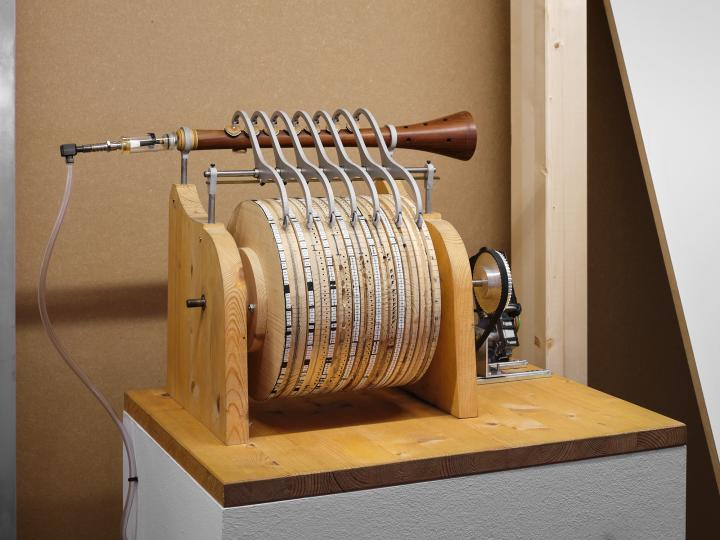

The Banu Musa automatic flute is a mechanical hydraulic organ operating automatically by the action of weight and water pressure. The air pushed by the hydraulic pump is compressed in a sphere to power a flute with nine holes. The holes are opened and closed by levers, the ends of which make contact with the fixed raised pins arranged on the surface of a revolving cylinder.
\ On the left of the diagram is a system of gears, which when activated by hydraulic wheel allows the alternate flow of water into the two compartments of the pump.
The spherical air compressor is located above the main body of the air pump; it acts as bellows and receives air continuously from the two pump compartmpents and sends it to the flute through a pipe fixed to one end of the flute.
The revolving cylinder with pins is on the right side of the diagram. A gear system, activated by a hydraulic wheel, turns the cylinder in a uniform circular motion. The speed of rotation is regulated by the stream of water from the valve. A regulating system is in place to either increase or decrease the speed of rotation.
By changing the revolving cylinder with pins, the machine could be made to play different musical pieces. As such, it is probably the first known programmable machine.